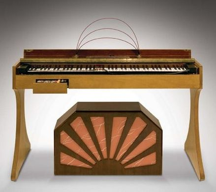

Composición Musical
Clase 011

Four Meditations for Orchestra
Pauline Oliveros
Rock Piece
Pauline Oliveros
Su Taşıyan Kız
Bakıtzhan Baikadamov
Ondas Martenot
Concierto para Piano n º 3, II Mov.
Sergey Prokofiev
Pale Machine
Bo En
The Eternal City (2014) Full Album
voodoochild
Postdata
Próxima clase Revisión de trabajos
Tarea:
https://translate.google.com/?hl=es#es/en/oooooooooooooooohooooooooooooooooooooohoooooooooooooooohhoooooooohhhooooooohhhhhhhhhhht%20.................................................%20..........................................%20mmmmm%20ttt%20......%20...........
https://translate.google.com/?hl=es#hy/es/mmmmmmmmmmmmmmmmmmmmmmhhmmhhhmmhmmmmmmmmmmmmmhhhmmmhhmmmhmmhmmmhmmhmmmmhhhhhhhmmhmmhmmmhmmmmm
011